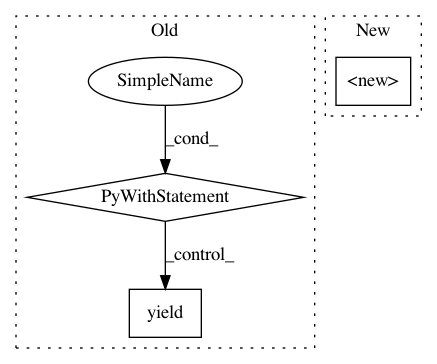

3b77f6b6c38fea6616cae10ca8e0c3a20782934a,tests/python/pants_test/backend/jvm/subsystems/test_jar_dependency_management.py,JarDependencyManagementTest,_jar_dependency_management,#JarDependencyManagementTest#,24
Before Change
options = {
"jar-dependency-management": flags,
}
with subsystem_instance(JarDependencyManagement, **options) as manager:
yield manager
def test_conflict_strategy_short_circuits(self):
with self._jar_dependency_management(conflict_strategy="FAIL") as manager:
manager.resolve_version_conflict(
direct_coord=self._coord_any,
After Change
def _jar_dependency_management(self, **flags):
Subsystem.reset()
options = {
JarDependencyManagement.options_scope: flags,
}
return global_subsystem_instance(JarDependencyManagement, options=options)
In pattern: SUPERPATTERN
Frequency: 3
Non-data size: 3
Instances
Project Name: pantsbuild/pants
Commit Name: 3b77f6b6c38fea6616cae10ca8e0c3a20782934a
Time: 2016-09-12
Author: benjyw@gmail.com
File Name: tests/python/pants_test/backend/jvm/subsystems/test_jar_dependency_management.py
Class Name: JarDependencyManagementTest
Method Name: _jar_dependency_management
Project Name: pantsbuild/pants
Commit Name: 3b77f6b6c38fea6616cae10ca8e0c3a20782934a
Time: 2016-09-12
Author: benjyw@gmail.com
File Name: tests/python/pants_test/backend/jvm/tasks/test_scalastyle.py
Class Name: ScalastyleTest
Method Name: custom_scala_platform_setup
Project Name: pantsbuild/pants
Commit Name: 3b77f6b6c38fea6616cae10ca8e0c3a20782934a
Time: 2016-09-12
Author: benjyw@gmail.com
File Name: tests/python/pants_test/backend/jvm/subsystems/test_custom_scala.py
Class Name: CustomScalaTest
Method Name: scala_platform_setup